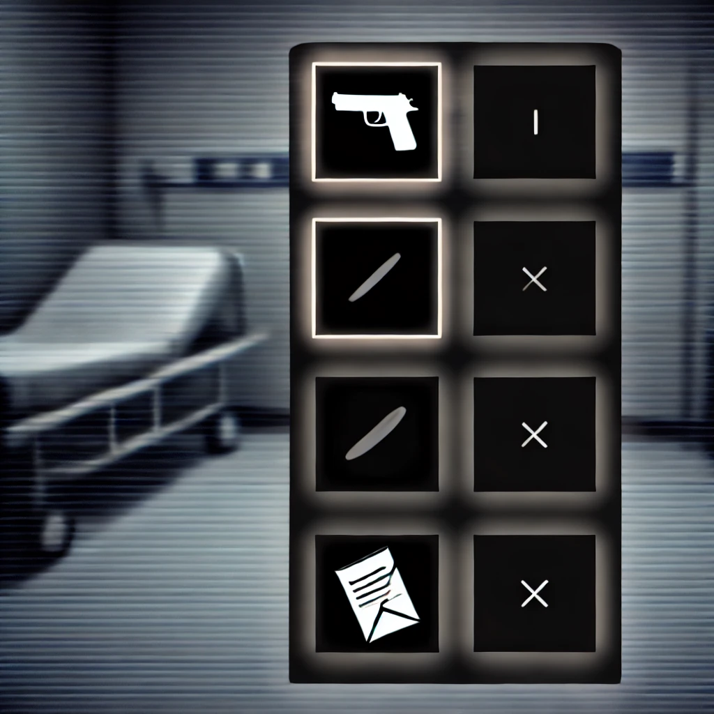
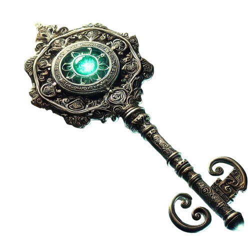

×
Guide du Jeu
Bienvenue dans The Hollow Reflection ! Voici comment jouer :
-
Explorer :
 Cliquez et déplacez-vous dans les différentes scènes pour découvrir les secrets de la maison.
Cliquez et déplacez-vous dans les différentes scènes pour découvrir les secrets de la maison.
- Inventaire :  Collectez des objets (Clé, Note, Pistolet) en cliquant dessus. Ils apparaîtront dans votre inventaire.
- Interactions :  Utilisez les objets de votre inventaire en les faisant glisser vers les zones interactives.
-
Santé Mentale :
 Surveillez votre barre de santé mentale. Une santé mentale basse déclenche des effets spéciaux et sonores.
Surveillez votre barre de santé mentale. Une santé mentale basse déclenche des effets spéciaux et sonores.
-
Dialogues :
 Suivez les dialogues et faites des choix en appuyant sur les touches A, B ou C pour influencer l'histoire.
Suivez les dialogues et faites des choix en appuyant sur les touches A, B ou C pour influencer l'histoire.
Bonne chance, et souvenez-vous : chaque choix a ses conséquences...